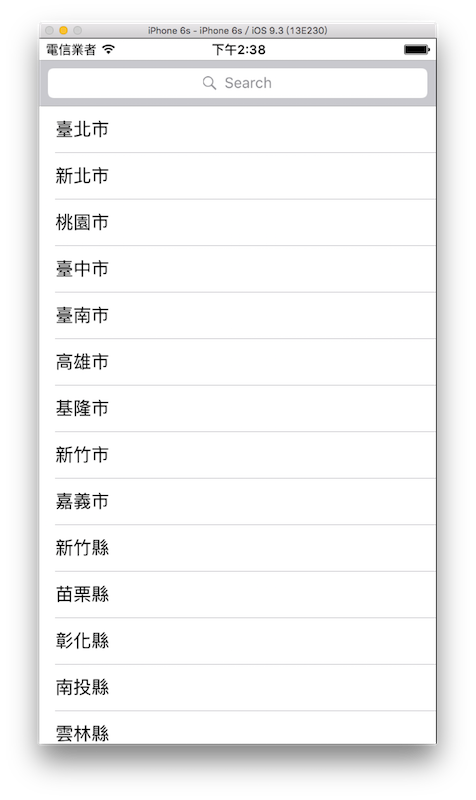

搜尋 UISearchController
當有一大筆資訊時，通常可以加上搜尋功能，用來篩選出需要的資訊，這節使用 UITableView 配合 UISearchController 來示範一個搜尋框功能，以下是本節目標：

首先在 Xcode 裡，新建一個 Single View Application 類型的專案，取名為 ExUISearchController 。
一開始先為ViewController建立四個屬性：
class ViewController: UIViewController {
var tableView: UITableView!
var searchController: UISearchController!
let cities = [
"臺北市","新北市","桃園市","臺中市","臺南市",
"高雄市","基隆市","新竹市","嘉義市","新竹縣",
"苗栗縣","彰化縣","南投縣","雲林縣","嘉義縣",
"屏東縣","宜蘭縣","花蓮縣","臺東縣","澎湖縣",]
var searchArr: [String] = [String](){
didSet {
// 重設 searchArr 後重整 tableView
self.tableView.reloadData()
}
}
// 省略
}
上述設置中，cities是全部原始的資料，而searchArr則是隨搜尋文字不同，篩選出來的資料，didSet的使用方法請參考屬性觀察器。 UITableView 的方法reloadData()則是當資料有更新時重整表格用的。
建立 UISearchController
範例使用 UITableView 來配合搜尋結果，所以要先在viewDidLoad()中建立一個 UITableView ：
// 建立 UITableView
tableView = UITableView(frame: CGRect(
x: 0, y: 20,
width: fullScreenSize.width,
height: fullScreenSize.height - 20),
style: .plain)
tableView.register(
UITableViewCell.self,
forCellReuseIdentifier: "Cell")
tableView.delegate = self
tableView.dataSource = self
self.view.addSubview(tableView)
詳細使用方式請參考表格 UITableView。
接著在viewDidLoad()中建立 UISearchController ：
// 建立 UISearchController 並設置搜尋控制器為 nil
searchController =
UISearchController(searchResultsController: nil)
// 將更新搜尋結果的對象設為 self
searchController.searchResultsUpdater = self
// 搜尋時是否隱藏 NavigationBar
// 這個範例沒有使用 NavigationBar 所以設置什麼沒有影響
searchController.hidesNavigationBarDuringPresentation = false
// 搜尋時是否使用燈箱效果 (會將畫面變暗以集中搜尋焦點)
searchController.dimsBackgroundDuringPresentation = false
// 搜尋框的樣式
searchController.searchBar.searchBarStyle = .prominent
// 設置搜尋框的尺寸為自適應
// 因為會擺在 tableView 的 header
// 所以尺寸會與 tableView 的 header 一樣
searchController.searchBar.sizeToFit()
// 將搜尋框擺在 tableView 的 header
self.tableView.tableHeaderView = searchController.searchBar
委任模式
除了 UITableView 有設置委任對象， UISearchController 也同樣設置了更新搜尋結果的委任對象，在前面章節的範例中已經示範過了在self(也就是 ViewController 本身)以及另外建立一個獨立檔案來實作委任對象的方法。這邊則介紹第三種方式，以擴展來實作委任的方法。
實際上就與在self裡實作一樣，但基於 Swift 擴展 ( extension )的特性，可以對 ViewController 新增一個擴展，來將委任方式寫在獨立的一個擴展中。
擴展的詳細說明請參考前面擴展章節介紹的內容。
請先以新增檔案的方式新增一個檔案，命名為 ViewControllerExtensions ，不同的地方在於，請選擇iOS > Source > Swift File，如下圖：

建立好檔案後，開啟 ViewControllerExtensions.swift ，先將原本的import Foundation改為import UIKit，並在其中以擴展 ViewController 的方式，加上需要實作的委任方法，如下：
extension ViewController: UITableViewDataSource {
func tableView(
_ tableView: UITableView,
numberOfRowsInSection section: Int) -> Int {
if (searchController.isActive) {
return searchArr.count
} else {
return cities.count
}
}
func tableView(
_ tableView: UITableView,
cellForRowAt indexPath: IndexPath)
-> UITableViewCell {
let cell = tableView.dequeueReusableCell(
withIdentifier: "Cell",
for: indexPath)
if (searchController.isActive) {
cell.textLabel?.text = searchArr[indexPath.row]
return cell
} else {
cell.textLabel?.text = cities[indexPath.row]
return cell
}
}
}
extension ViewController: UITableViewDelegate {
func tableView(
_ tableView: UITableView,
didSelectRowAt indexPath: IndexPath) {
tableView.deselectRow(at: indexPath, animated: true)
if (searchController.isActive) {
print("你選擇的是 \(searchArr[indexPath.row])")
} else {
print("你選擇的是 \(cities[indexPath.row])")
}
}
}
extension ViewController: UISearchResultsUpdating {
func updateSearchResults(
for searchController: UISearchController) {
// 取得搜尋文字
guard let searchText = searchController.searchBar.text else {
return
}
searchArr = cities.filter { (city) -> Bool in
return city.contains(searchText)
}
}
}
上述程式中，前兩個擴展用來實作 UITableView 委任的方法，需要注意的是 UISearchController 有一個屬性isActive，用來表示目前是否為搜尋狀態，當搜尋狀態時就是顯示搜尋後的結果searchArr，而非搜尋狀態時則是顯示所有資訊cities。
最後一個擴展則是用來實作更新搜尋結果的方法，首先是取得搜尋的文字，接著則是對原始資料的陣列使用filter()方法篩選資訊。
guard的使用方式請參考提前退出。
以上即為本節範例的內容。
範例
本節範例程式碼放在 uikit/uisearchcontroller